| โปรแกรม Adobe Dreamweaver |
Adobe Dreamweaver คือ โปรแกรมทำเว็บไซต์ แก้ไข HTML สำหรับการออกแบบเว็บไซในรูปแบบ WSIWYG กับการควบคุมของส่วนแก้ไขรหัส HTML ในการพัฒนาโปรแกรมที่มีการรวมทั้งสองแบบเข้าด้วยกันนี้ ทำให้โปรแกรม Adobe Dreamweaver เป็นโปรแกรมที่แตกต่างจากโปรแกรมอื่น ๆ ในประเภทเดียวกัน AdobeDreamweaver เป็นโปรแกรมสำหรับพัฒนาเว็บไซต์ซึ่งมีคุณสมบัติครอบคลุมตั้งแต่การออกแบบและสร้างเว็บไซต์และสร้างเว็บเพจ การบริหารจัดการเว็บไซต์ ตลอดจนการพัฒนาเว็บแอปพลิเคชันเบื้องต้นโปรแกรมนี้ได้รับความนิยมเป็นอย่างมาก เพราะมีคุณสมบัติเด่น คือ ใช้งานง่าย มีเครื่องมือสำหรับวางข้อความ (Text) ภาพกราฟิก (Graphic)ตาราง (Table) แบบฟอร์ม (Form) มัลติมิเดีย (Multimedia) รวมทั้งองค์ประกอบต่าง ๆ เพื่อโต้ตอบกับผู้ชมลงบนเว็บเพจได้ง่าย โดยผู้ใช้ไม่จำเป็นต้องรู้จักภาษา HTML, CSS, JavaScript และภาษา Script อื่นๆ ดังนั้นจึงเหมาะสำหรับผู้เริ่มต้นและผู้ใช้ทั่วไป นอกจากนี้ยังมีคุณสมบัติขั้นสูงอีกมากมายเหมาะสำหรับนักพัฒนาเว็บไซต์มืออาชีพด้วยเช่นกัน Adobe เป็นโปรแกรมที่ช่วยให้เขียนเว็บไซต์ได้ง่ายขึ้นและมีเครื่องมืออำนวยความสะดวกมากมายที่เป็นประโยชน์ในการทำเว็บไซต์ |
ภาพที่ 2.1 โปรแกรม Adobe Dreamweaver
|
| จุดเด่นของโปรแกรม Adobe Dreamweaver |
โปรแกรมจะแปลงรหัสคำสั่งให้เป็นกาษา HTML โดยอัติโนมัติ ดังนั้นผู้ใช้งานที่ไม่มีความรู้ด้านนี้ก็สามารถทำให้ภายในโปรแกรมจะมีแถบเครื่องมือหรือแถบคำสั่งที่ใช้ในการควบคุมการทำงาน แบ่งออกเป็นหมวดหมู่ช่วยในการทำงานได้ดีขึ้นและรวดเร็วยิ่งขึ้น นอกจากนี้ ยังมีความสามารถต่าง ๆ เช่น 1. สนับสนุนการทำงานแบบ WYSIWYG (What You See Is What You Get) หมายความว่าเว็บที่เขียนหน้าจอโปรแกรมจะแสดงแบบเดียวกับเว็บเพจจริง ๆ ช่วยให้เขียนเว็บเพจง่ายขึ้น ไม่ต้องเขียน Code HTML เอง การเข้าสู่โปรแกรม |
ภาพที่ 2.2 เข้าสู่โปรแกรม Adobe Dreamweaver CC 2018
|
| 2. ปรากฏหน้าต่างให้เลือกรูปแบบการสร้างไฟล์ใหม่ ดังนี้ |
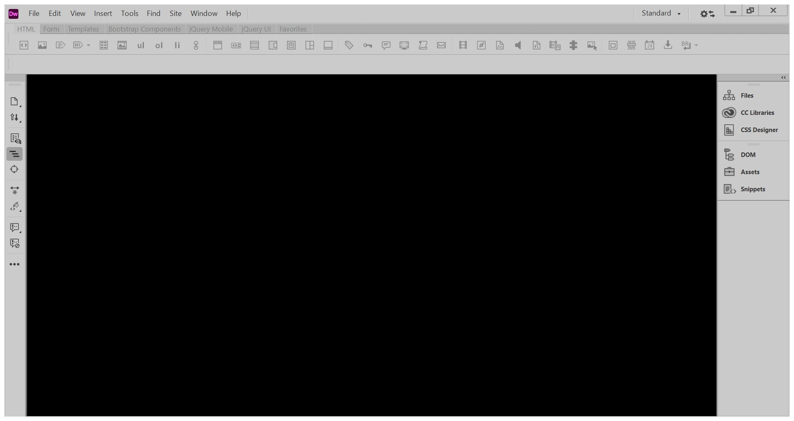 ภาพที่ 2.3 หน้าต่างการทำงาน
|
| 3. คลิกเมนู File แล้วเลือก New จะปรากฎหน้าจอ New Document |
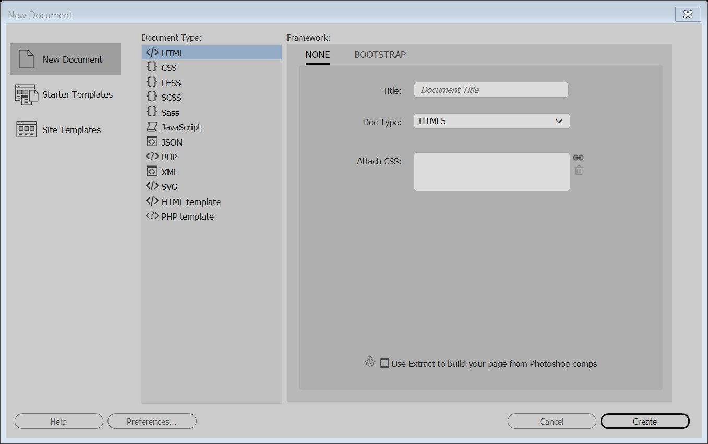 ภาพที่ 2.4 หน้าจอ New Document
|
| ในส่วนของ New Document ใช้ในกรณี สร้างเอกสารใหม่ |
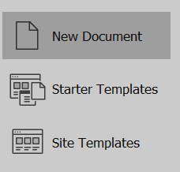 ภาพที่ 2.5 หน้าจอการสร้างเอกสารใหม่
|
| ส่วนของ Document Type เป็นส่วนของชนิดภาษา เช่น HTML CSS PHP ฯลฯ |
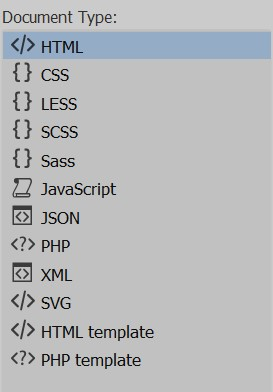 ภาพที่ 2.6 หน้าจอเลือกชนิดภาษา
|
| ส่วนของ Framework จะเป็นส่วนของการพิมพ์หัวข้อเรื่อง (Title) และชนิดของเอกสาร (Doc Type) |
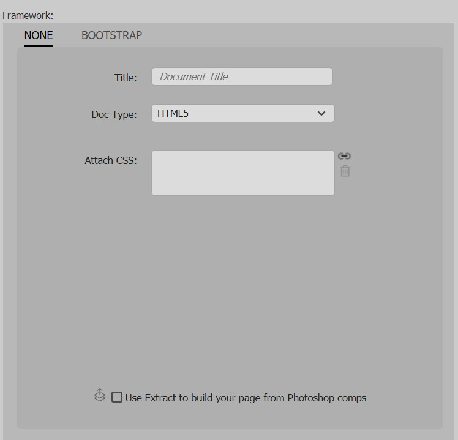 ภาพที่ 2.7 Framework
|
| ทั้งนี้ ในส่วนของ Starter Templates จะเป็นเทมเพลตให้เลือกหลายรูปแบบ |
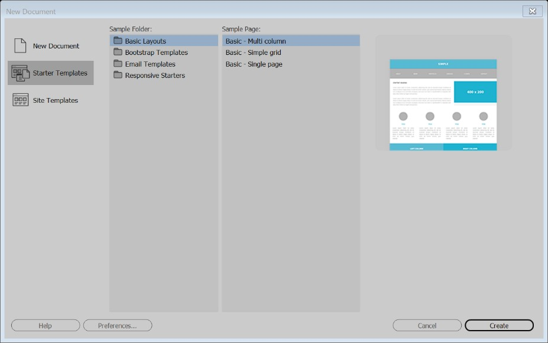 ภาพที่ 2.8 Starter Templates
|
| และในส่วนของ Site Templates จะเป็นเทมเพลตของไซต์ที่ได้ทำไว้แล้ว |
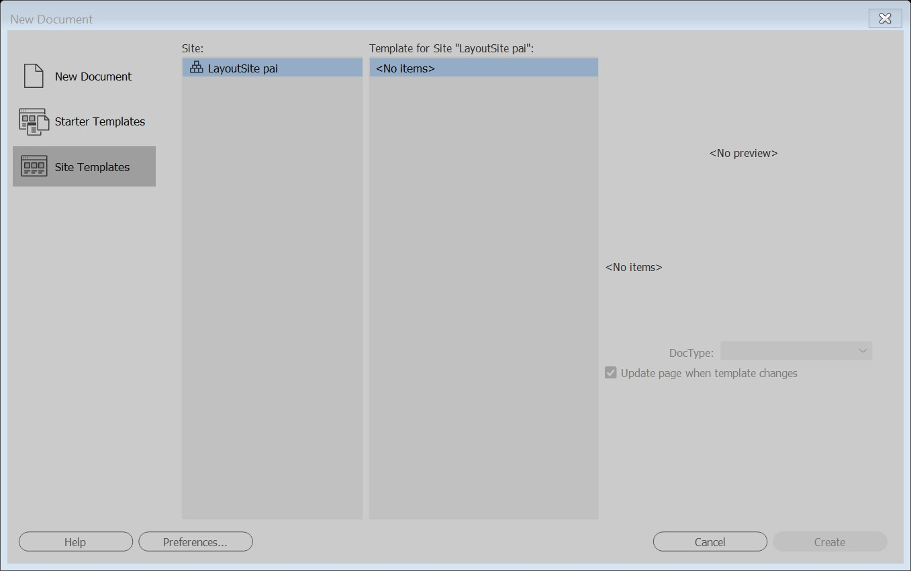 ภาพที่ 2.9 Site Templates
|
| ทั้งนี้ เมื่อเลือกรูปแบบของเอกสารใหม่แล้ว ในที่นี้เลือก New Document และเลือก HTIML เสร็จแล้วให้คลิกที่ปุ่ม Create |
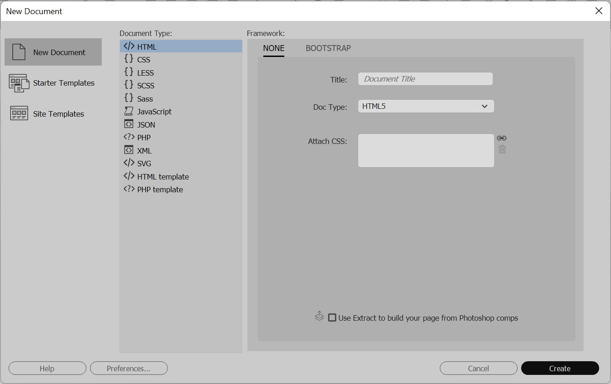 ภาพที่ 2.10 New Document
|
| ส่วนประกอบของโปรแกรม Adobe Dreamweaver ส่วนประกอบของโปรแกรม Adobe Dreamweaver มีดังนี้ |
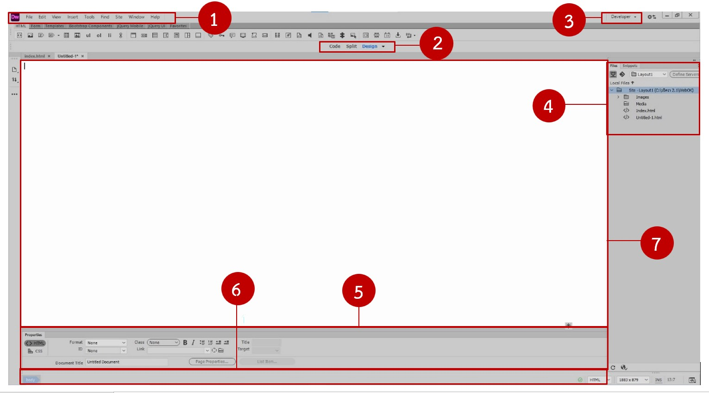 ภาพที่ 2.11 หน้าต่างการทำงาน
|
| 1. Menu Bar เป็นที่รวมคำสั่งทั้งหมดของโปรแกรม Adobe Dreamweaver CC ที่ใช้ในการจัดการกับไฟล์เว็บเพจ ซึ่งจะประกอบด้วย - File เป็นเมนูคำสั่งสำหรับจัดการกับไฟล์เว็บเพจ เช่น สร้างเว็บเพจใหม่ (New) บันทึกเว็บเพจ (Save) นำเข้า (Import) แสดงเว็บผ่านเบราว์เซอร์ (Preview in Browser) และออกจากโปรแกรม (Exit) |
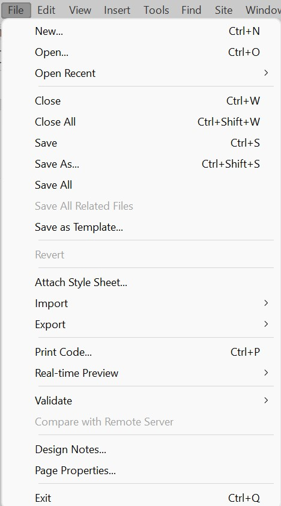 ภาพที่ 2.12 เมนู File
|
| - Edit เป็นเมนูคำสั่งสำหรับการแก้ไขเช่น คัดลอก (Copy) ตัด (Cut) วาง (Paste) ค้นหา (Find) รวมถึงการตั้งค่าการทำงาน (Preference) ต่าง ๆ |
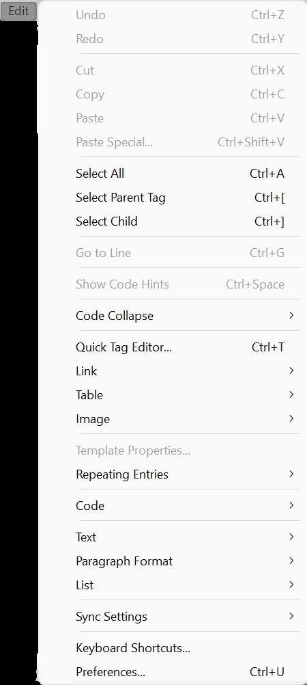 ภาพที่ 2.13 เมนู Edit
|
| - View เป็นเมนูคำสั่งสำหรับปรับเปลี่ยนมุมมองของเว็บเพจขณะทำงาน เช่น Code,Split,View Mode, Live Codeฯลฯ |
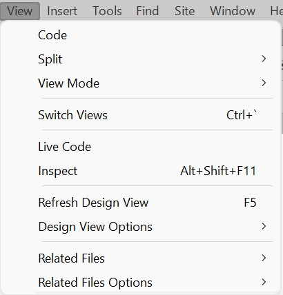 ภาพที่ 2.14เมนู View |
| - Insert เป็นเมนูคำสั่งสำหรับแทรกวัตถุต่าง ๆ เช่น รูปภาพ (Image) สื่อต่าง ๆ (Media) ตาราง (Table) การเชื่อมโยง (Hyperlink) หัวข้อรายการ (List item) |
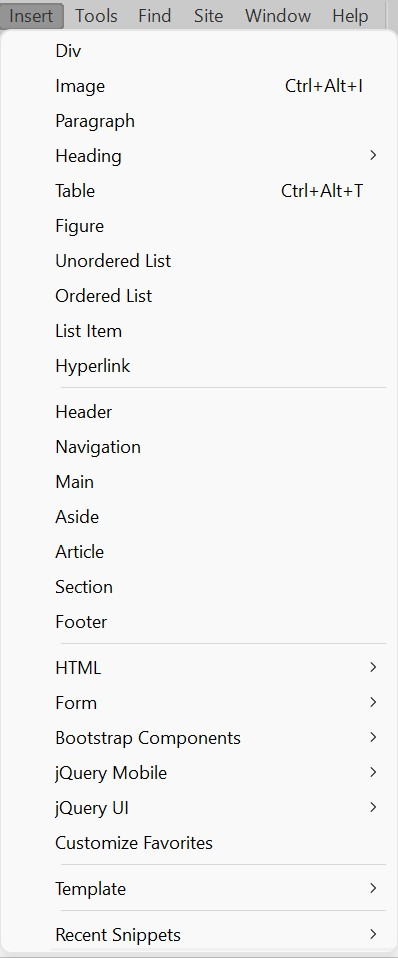 ภาพที่ 2.15 เมนู Insert
|
| - Tool แถบเครื่องมือ จะประกอบด้วยการคอมไพล์ (Compile) การจัดการตัวอักษร (Manage Fonts) การกำหนดภาษา HTML การกำหนด CSS |
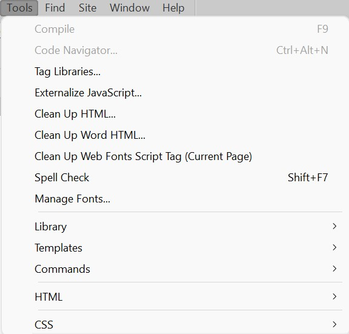 ภาพที่ 2.16 เมน Tools
|
| - Find เป็นเมนูคำสั่งในการค้นหาเอกสารปัจจุบัน (Find in Current Document) การคันหาและทำซ้ำ (Find and Replace in Files) การค้นหาต่อไป (Find Next) การค้นหาที่แถบสีคลุมไว้ (Find Selection) ฯลฯ |
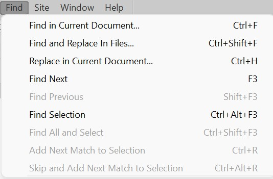 ภาพที่ 2.17 เมนู Find
|
| - Site เป็นเมนูคำสั่งสำหรับจัดการกับ Site เช่น สร้าง Site หรือแก้ไข Site ที่ทำงาน รวมถึง การตรวจสอบลิงก์ต่าง ๆ ใน site |
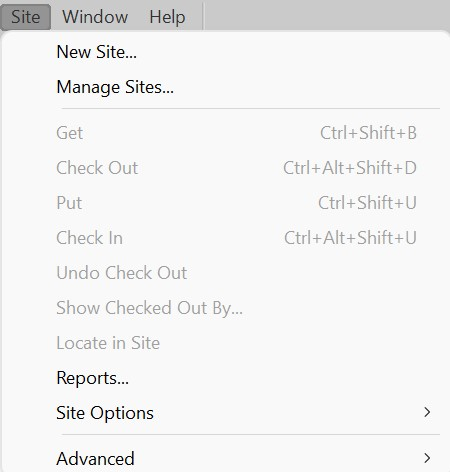 ภาพที่ 2.18 เมนู Site
|
| - Window เป็นเมนูที่ใช้ในการเปิดหรือปิดพาเนล (Panel) ที่ทำงานอยู่ให้สังเกตว่าส่วนที่มีเครื่องหมายสี่เหลี่ยมจะเป็นพาเนลที่ปรากฏอยู่ |
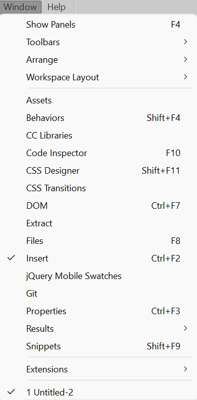 ภาพที่ 2.19 เมนู Window
|
| - Help เป็นเมนูที่ใช้ในการขอความช่วยเหลือผ่านเว็บไซต์ Adobe เช่น การให้ความรู้เกี่ยวกับโปรแกรม (Dreamweaver Tutorial) หรือ Quick Tutorial หรือการแลกเปลี่ยนความรู้เกี่ยวกับโปรแกรม (Adobe Online Forums) |
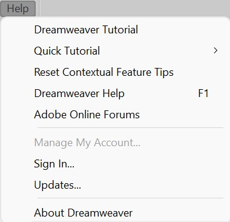 ภาพที่ 2.20 เมนู Help
|
| 2. มุมมองการทำงาน มีไว้เพื่อเลือกสัดส่วนการแสดงผลบนหน้าจอการทำงานของโปรแกรมสามารถเลือกรูปแบบการแสดงผล เพื่อตรวจสอบการทำงานหรือข้อผิดพลาดจากการพัฒนาเว็บไซต์ได้ ตามรูปแบบมุมมองการใช้งานโปรแกรม ดังนี้ |
ภาพที่ 2.21 มุมมองการทำงาน
|
| - Code เป็นส่วนมุมมองที่แสดงผลเฉพาะดำสั่งของเว็บเพจที่กำลังพัฒนา ซึ่งจะแสดงคำสั่งต่าง ๆ ที่เป็นภาษา HTML, CSS รวมไปถึง JavaScript หรือภาษาอื่น ๆ เพื่อให้ผู้สร้างได้พิมพ์คำสั่งเพิ่มเติมตามที่ต้องการดังภาพ |
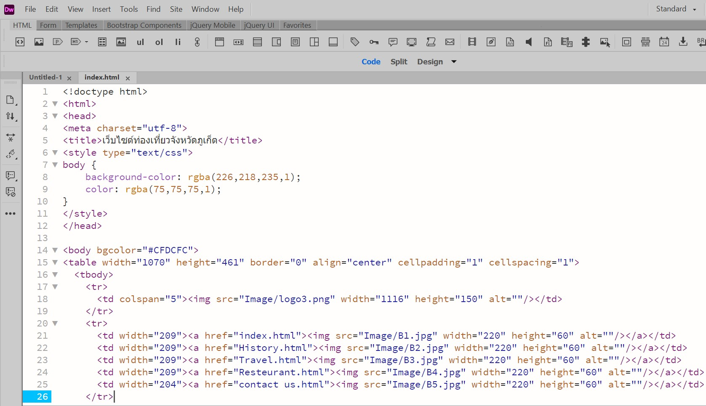 ภาพที่ 2.22 มุมมอง Code
|
| - Split เป็นส่วนมุมมองที่แสดงผลและแสดงคำสั่งของเว็บเพจที่กำลังพัฒนา ซึ่งมีส่วนที่ให้ผู้ใชังานเลือกพิมพ์แก้ไขรหัสคำสั่งที่ผู้สร้างต้องการ หรือเลือกแก้ไขเว็บเพจที่ส่วนการแสดงผลของโปรแกรมก็ใด้ ซึ่งจะส่วนที่เป็น Code และ Design ทำให้สามารถมองเห็นส่วนที่เป็นภาษาและส่วนที่จัด |
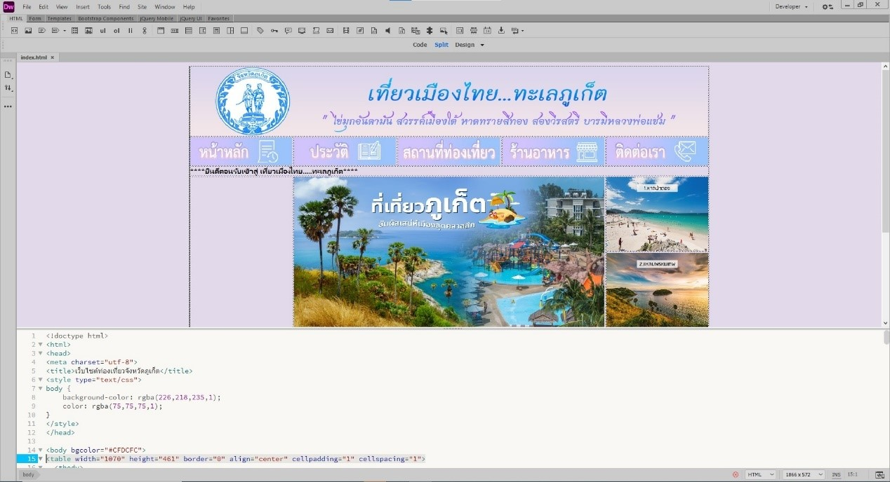 ภาพที่ 2.23 มุมมอง Split
|
| - Design คือ มุมมองออกแบบ เป็นส่วนที่ใช้ในการออกแบบลิงก์เชื่อมโยงการพัฒนาในรูปแบบเสมือนกับที่แสดงผลบนหน้าจอเว็บเบราว์เซอร์ ซึ่งจะแสดงตัวอักษร รูปภาพ ตารางหรือสื่อมัลติมีเดียอื่น ๆ เพื่อให้ผู้สร้างได้ตรวจสอข้อผิดพลาดก่อนการใช้งาน ตัวอย่างหน้าจอการทำงานในมุมมอง Design ดังภาพ |
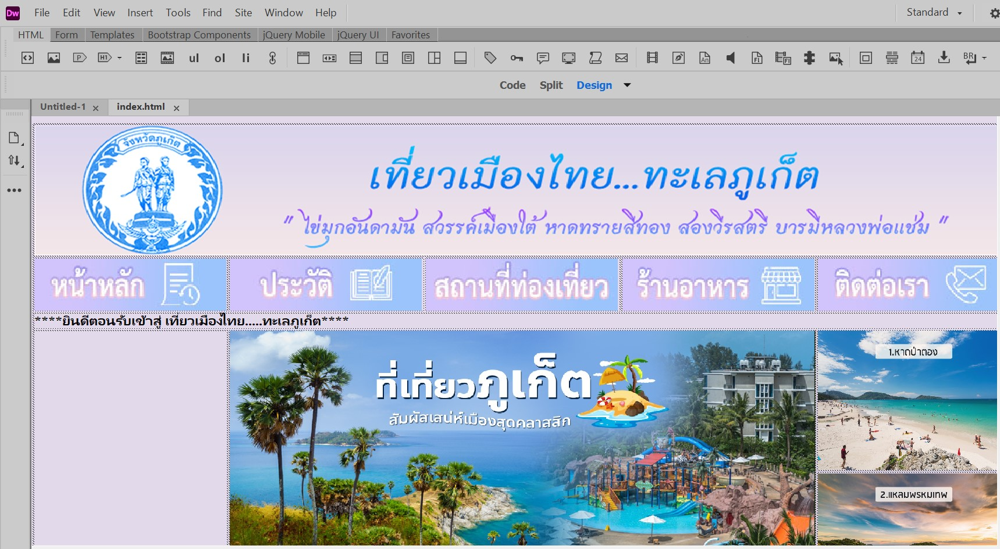 ภาพที่ 2.24 มุมมอง Design
|
| - Live เป็นมุมมองการแสดงผลเว็บไซต์ในโปรแกรม Adobe Dreamweaver |
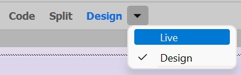 ภาพที่ 2.25 มุมมอง Live
|
| สามารถแสดงผลได้ทั้งมุมมอง Code มุมมอง Design ซึ่งจะแสดงผลการทำงานเหมือนเว็บไซต์ในโปรแกรมเว็บเบราว์เซอร์เพื่อให้ผู้สร้างได้ตรวจสอบข้อผิดพลาดจากการพัฒนาเว็บไซต์ดังภาพ |
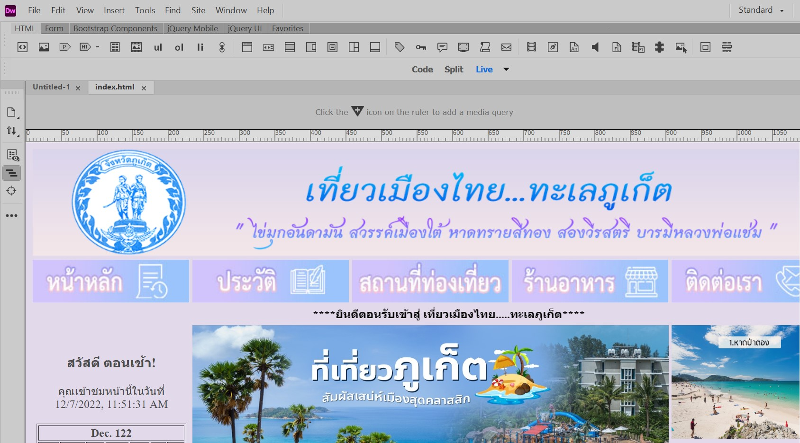 ภาพที่ 2.26 Workspace
|
| 3.Workspace เป็นปุ่มสำหรับเปลี่ยนมุมมองพื้นที่ทำงาน โดยสามารถเลือกได้ว่าต้องการใช้งานรูปแบบในลักษณะใด ซึ่งในโปรแกรม Adobe Dreamweaver มีให้เลือกใช้ระหว่างมุมมองนักพัฒนา (Developer) และมุมมองมาตรฐาน (Standard) |
\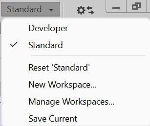 ภาพที่ 2.27 Standard
|
| - standard เป็นเครื่องมือที่ประกอบไปด้วยปุ้มคำสั่งพื้นฐานที่ใช้ในการจัดการไฟล์ เช่น การเปิดไฟล์ (Open) การจัดการไฟล์ (File Management) |
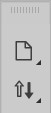 ภาพที่ 2.28 Developer
|
| - Developer เป็นทูลบาร์ที่ออกแบบมาเพื่อให้แสดงการทำงานของหน้าเว็บเพจที่ใช้งาน Style Sheet บนมีเดียประเภทต่าง ๆ เช่นหน้าจอคอมพิวเตอร์ เครื่องพิมพ์ โพรเจกเตอร์ บนจอโทรทัศน์ การเพิ่ม/ลดขนาดตัวอักษร ตลอดจนการแสดงสีของสถานการณ์เชื่อมโยง Expand All,Format Source Code ,Apply Comment, Remove Comment |
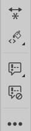 ภาพที่ 2.29 Panel Group
|
| 4. Panel Group เป็นพาเนลหน้าต่างขนาคเล็กที่รวบรวมเครื่องมือไว้เป็นกลุ่มตามหน้าที่สำหรับใช้งานเฉพาะเรื่องไว้ โดยสามารถเปิดหรือปิดพาเนลการทำงานได้ |
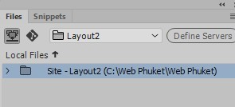 ภาพที่ 2.30 Files
|
| โดยคลิกเมนูคำสั่ง Window แล้วคลิกเลือกพาเนลที่ต้องการ |
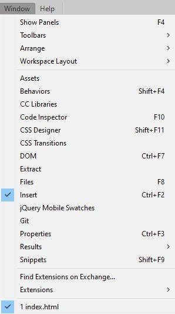 ภาพที่ 2.31 เมนู Window
|
| 5. Panel Properties เป็นพาเนลที่อยู่ต้านล่างของหน้าจอโปรแกรม เป็นส่วนที่ต้องใช้งานบ่อยที่สุดเพื่อใช้ในการปรับแต่งรายละเอียดและการแก้ไขคุณสมบัติต่าง ๆ เช่น ขนาด ตำแหน่ง หรือสี ฯลฯ โดยพาเนลนี้จะเปลี่ยนไปตามวัตถุที่เลือกใช้งานบนเว็บเพจ ตัวอย่างพาเนลคุณสมบัติ มีดังนี้ |
| - พาเนลคุณสมบัติเมื่อเลือกการทำงานข้อความบนเว็บเพจในรูปแบบภาษา HTML |
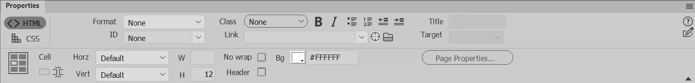 ภาพที่ 2.32 Panel Properties
|
| - พาเนลคุณสมบัติเมื่อเลือกการทำงานข้อความบนเว็บเพจในรูปแบบภาษา CSS |
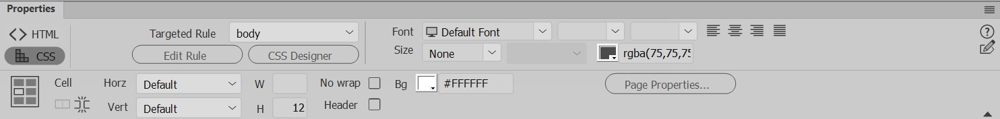 ภาพที่ 2.33 Panel Properties
|
| - พาเนลคุณสมบัติเมื่อเลือกการทำงานกับภาพประกอบบนเว็บเพจ |
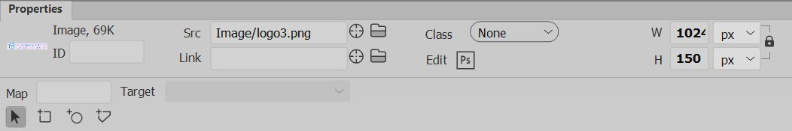 ภาพที่ 2.35 Panel Properties
|
- พาเนลคุณสมบัติเมื่อเลือกการทำงานกับตารางบนเว็บเพจ |
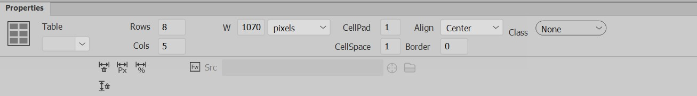 ภาพที่ 2.35Panel Properties
|
| 6. Status Bar เป็นแถบที่อยู่ด้านล่างของหน้าต่างการทำงาน ใช้แสดงข้อมูลเพิ่มเติมเกี่ยวกับสถานะของเว็บเพจที่กำลังทำอยู่ เช่น แสดงและเลือกแท็ก (Tag) HTML การปรับขนาดการแสดงผต่าง ขนาดของไฟล์และเวลาทีใช้ในการอัปโหลด และการแสดงรหัสภาษาของเว็บเพจที่กำลังใช้งาน |
ภาพที่ 2.36 Status Bar
|
7. Document Area เป็นพื้นที่สำหรับสร้างหน้าเว็บเพจ ใส่ข้อมูลเนื้อหาและองค์ประกอบของเว็บเพจ เช่น ภาพกราฟิก ระบบมัลติมีเดีย และโค้ดต่าง ๆ การบันทึก |
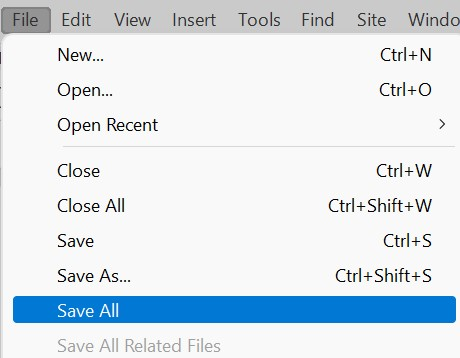 ภาพที่ 2.37 เมนู File
|
การเปิดไฟล์เดิม |
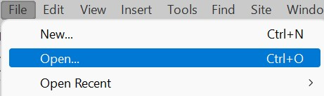 ภาพที่ 2.38 เมนู File
|
| 3. เลือกไฟล์ที่ต้องการ เสร็จแล้วคลิกที่ปุ่ม Open |
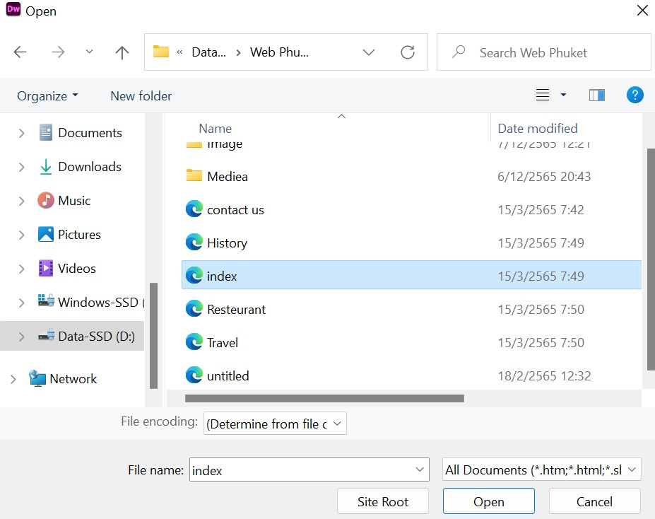 ภาพที่ 2.39 เมนู File
|
การออกจากโปรแกรม |
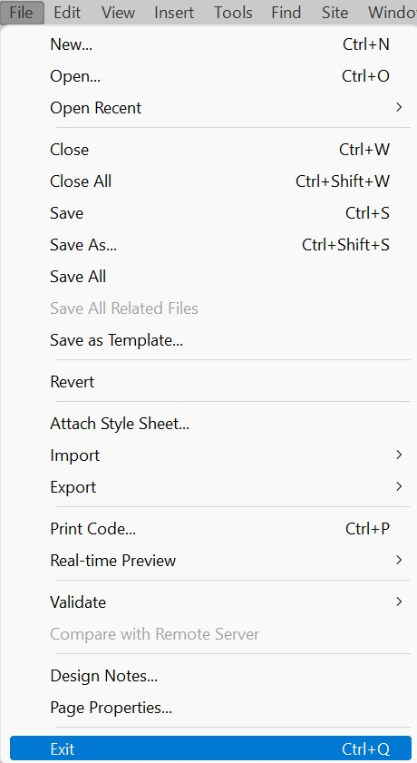 ภาพที่ 2.40 เมนู File
|
| หรือคลิกที่เครื่องหมาย X (Close) ที่อยู่มุมบนด้านขวามือของโปรแกรม |
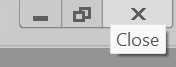 ภาพที่ 2.41 เครื่องหมาย X (Close)
|